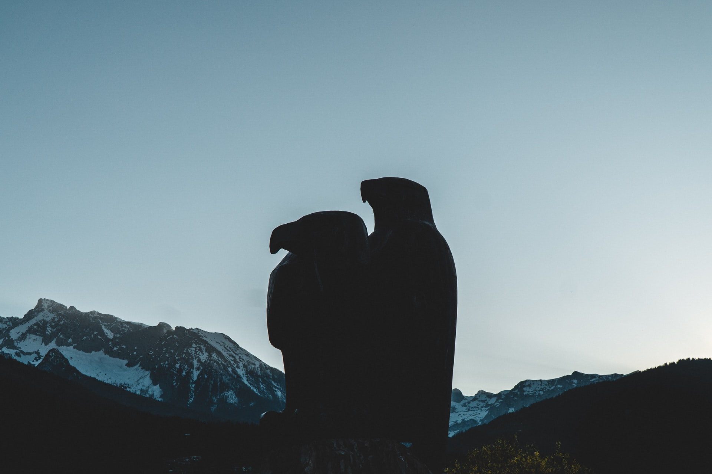

Ravenclaw
Revenclawis one of the four Houses of Hogwarts School of Witchcraft and Wizardry. Its founder was the medieval witch Rowena Ravenclaw. Members of this house are characterised by their wit, learning, and wisdom. The emblematic animal symbol is an eagle, and blue and bronze are its colours. The Head of Ravenclaw is Filius Flitwick and the house ghost is the Grey Lady, otherwise known as the daughter of Rowena Ravenclaw, Helena Ravenclaw.
Ravenclaw corresponds roughly to the element of air, and it is for that reason that the House colours were chosen; blue and bronze represent the sky and eagle feathers respectively, both having much to do with air. The Ravenclaw points hourglass contains blue sapphires